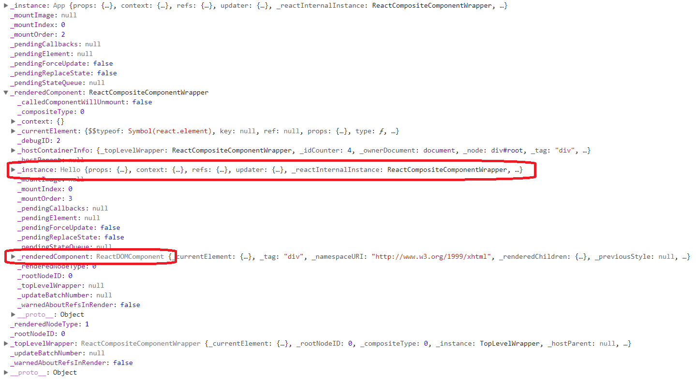
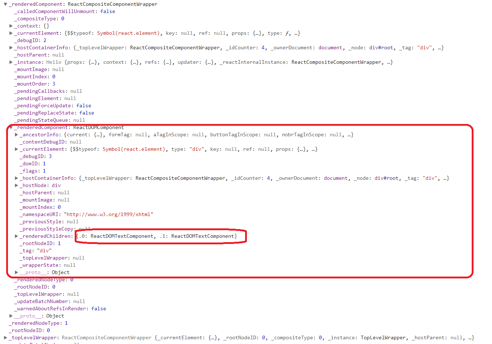

React：组件mount初探
前言
上一篇提及到，因为直接将React组件以AMD格式导出给Qt WebEngine使用，导致React在调用方new的时候直接对组件进行mount，却只因只加载最外层的TopLevelWrapper，而没有mount里面组件，导致整个组件未被正确加载（因为环境目前已被重构，具体原因还未深入探究。待之后有时间重新搭平台查询原因）。
组件mount整体流程
当写下面这样的代码后：1
2
3
4
5
6
7
8
9
10
11
12
13
14
15
16class Hello extends Component {
constructor(props, context) {
super(props, context);
}
render() {
return (
<div>Hello {this.props.msg}</div>
);
}
}
ReactDOM.render(
<Hello />,
document.getElementById('root')
);
React会做以下几件事情：
- 根据render中的类型实例化元素类型，比如是原生元素还是组合组件；
- 在container（也就是document.getElementById(‘root’)）中根据上述的类型创建DOM元素；
简单来说React就是做了以上两件事情。当然其中有很多细节，比如组件嵌套时，需要递归创建实例，然后在DOM创建相应的DOM节点，比如需要对组件的生命期进行管理。也就是：
组件mount
constructor -> componentWillMount -> render -> componentDidMount
组件更新
componentWillReceiveProps -> shouldComponentUpdate -> componentWillUpdate -> render -> componentDidUpdate
React需要在以上的阶段适当地调用用户的回调函数。在实现组件的mount过程中，使用了几个全局的操作：
- ReactUpdates的batch
- Transaction
- ReactReconciler
其中各个功能另外再表，在此不多说。
深入源码
从最初的用户代码的render开始。从render的签名来看，就是把第一个参数的组件，渲染到第二个DOM节点（也就是称之为container）中。React源码基于v16.0-beta。
第一步：确认节点类型，创建内部节点实例
在_renderSubtreeIntoContainer中获取container的顶层节点来判断是否更新已有的节点，还是创建新的根节点。在此只讨论新建根节点情况。
在_renderNewRootComponent中，根据节点类型创建实例。有几种类型：
- node为null或false时，创建类型
ReactEmptyComponent实例 - node为对象时，根据node的element的type来创建
- type为string时，创建类型为
ReactHostComponent.createInternalComponent实例 - type为内部组件类型时，直接调用其构造函数
- 其他情况，创建类型
ReactCompositeComponentWrapper实例
- type为string时，创建类型为
- node为string时，创建类型
ReactHostComponent.createInstanceForText实例
接下来就是根据不同的实例进行组件的mount操作。其中mount过程通过ReactUpdates.batchedUpdates进行调用。元素类型来说可以分为两类:
- 第一类就是和平台环境相关的称之为
Host Component - 另一类就是用户自定义的，称之为
Composite Component
第二步：根据不同节点，递归渲染子节点，构建组件生命周期
在mountComponentIntoNode中，ReactReconciler.mountComponent会根据第一步的实例，调用各个类型的mountComponent函数。
在此详细讲述下ReactCompositeComponentWrapper类型实例的mountComponent过程。
- 首先是环境的准备，包括元素的
props保存，创建上线文context环境，根据组件的类型（函数式也称为纯组件或者类声明）来判断是否需要实例化。 接下来就是构造实例。简单描述下
React内部返回给render的实例的几个重要的字段。_currentElement：主要是保存和组件相关的信息，包括组件类型，props，refs等，用来渲染真实的DOM元素所用_instance：上述_currentElement的实例_renderedComponent：这是一个内部的类型实例，也就是上面说的Host Component或者Composite Component。当然具体到实例化的时候会有更细的分类此处构造的实例就是
_instance，包括初始化内部的updater，ref，props等，为组件在更新时所用。确切点说就是会进入组件的构造函数中。同时React会保存这个实例到一个InstanceMap中。实例化完就调用组件生命周期hooks中的componentWillMount，如果有的话。
构造完实例，接下来就是进行
mount了。ReactCompositeComponentWrapper会调用组件中的render方法，同时这里会判断是否有子节点，有的话就对其_instantiateReactComponent，然后对子节点进行mountComponent调用，直到和平台相关的元素为止。递归返回后，将此实例赋给_renderedComponent。执行完
mount，回到组件生命周期hooks，也就是调用componentDidMount。整个过程也就算是结束了。
需要注意的一点是，上述的mount是递归构造的。
第三步：在container中创建相应的原生DOM元素
在第二步的创建实例过程中，如果元素的类型为string的话，那么会创建ReactHostComponent的InternalComponent，也就是ReactDOMComponent。然后在其mountComponent中，使用render最初传入的Container。使用实例中的_currentElement的信息(包括标签的类型，属性信息等)，在Container中的document中创建相关的元素。在创建相关的元素的过程中，React会做一些相关的处理，比如增加一些注释等等。
Chrome Dev Tool验证
基于最初的那一段代码，从Dev Tool中查看相应的节点信息是否符合上述的源码解释。首先是Top-Level：
可以看到_instance为TopLevelWrapper，其_renderedComponent中的_instance为App，类型为ReactCompositeComponentWrapper，是一个组合组件的类型。

此时，_instance为App，其_renderedComponent已经为Hello，也就是上述写的组件名称，其类型同样为组合组件类型ReactCompositeComponentWrapper。再看下Hello的内部。

可以看到，_instance为Hello，同时，_renderedComponent的类型成了ReactDOMComponent，这个就是上述所说的Host Component中的一种。再看看Hello的_renderedComponent内部。
Hello的_renderedComponent和前面几个已经不一样，因为这已经是叶子节点，也就是最终要渲染到浏览器中的东西，是平台相关的元素。因此里面有两个ReactDOMTextComponent，是最终显示到浏览器中Hello和React。
总结
本文简单阐述了React中的组件mount的过程。包括React创建实例过程中，根据不同的组件类型，创建不同的实例，同时在组件中，递归地去mount其子节点。以及在mount的过程中，何时对用户代码中的生命周期hook函数进行调用。